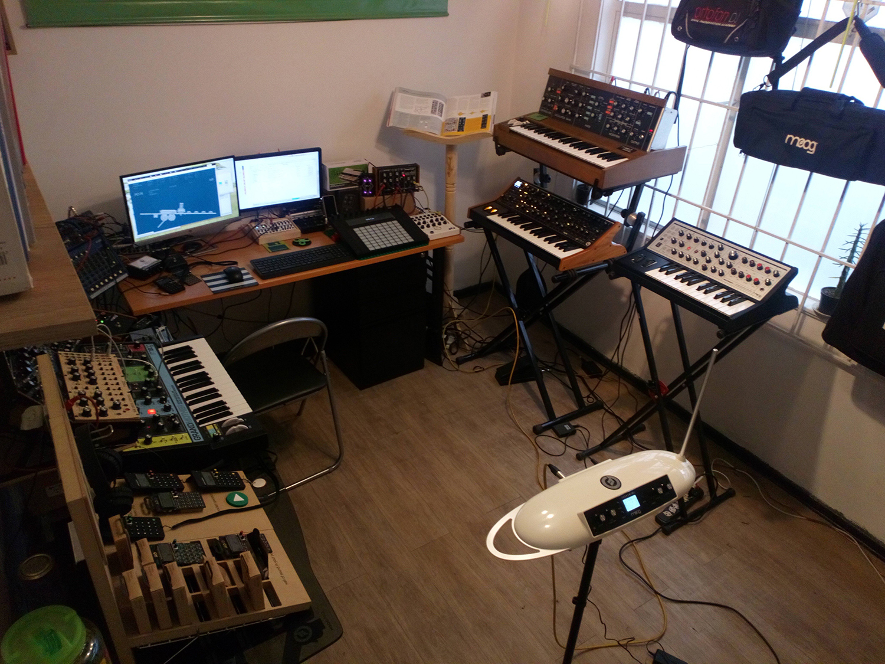

Order Online
V.
We vote 2-1 to order online. I warn Bernard and Speedy that it's a haphazard trip in the office due to it being filled with stationary items and expired music equipment. Bernard carries a water bowl in his mouth, and Speedy tells us to wake her up before we go into the office. She hobbles upstairs to take a quick nap in our captors' bedroom. We hear her bell on her collar bounce each time she walks up a stair. "You know, we have to find a way to get rid of these obnoxious bells, right?" I tell Bernard. "Any humans or predators will hear us."
"We might also need a costume," Bernard adds, "when we greet whoever delivers our food!"
"Good idea," I say. "Forgot about that. Why not get into that inflatable T-Rex outfit laying around in the basement?"
"I rather wear the shark costume. People love that. Far more realistic."
"Let's just wear both. We can wear the shark outfits inside the T-Rex and then ditch the T-Rex outfit if it gets too hot."
VI.

"Office" by Audiotecna Música is licensed under CC0 1.0.
I click the mouse and finish the order. The electronic parts that I needed were either sold out or just not invented by these primative humans. Instead, I bought us food delivery every day at this time for the rest of the year. It would also include a reward of a surprise celebrity guest who will take us to get the food today and later bring us back. Speedy and Bernard look at me from below the office desk. Speedy tells us just to bring something back; she dislikes car rides, and goes back upstairs for a nap. Bernard and I get dressed in the T-Rex outfit, and in twenty minutes, we see a stretch limo pull up outside.
A tall man, dressed in black business suit and sunglasses, gets out of the limo. He walks up to the door and rings the bell. We motion him inside, and he opens the door. I see a surprised expression on his face, and he whispers into his sleeve: "Jesus, Barry, you're never going to believe this. There's a weirdo dressed up as a T-Rex, just as the note said on the app." He pauses. "Yes, the note also said no questions asked, but are you sure we shouldn't call this one in? How do we know that he didn't rob the place? ...Wait, what? Sorry, you're right, I shouldn't assume the person is a male just because they're dressed up in a T-Rex costume. Yes, weirdo isn't politically correct jargon, either, I apologize. Yes, yes, the note said no questions asked. What was that again? Yes, he--they are standing in front of me. I'll let them know they should meet you in the backseat."
He motions to us and tells us to follow him to the limo. He opens the backseat, and we sit inside. It appears much more spacious on than inside than one would expect looking out. A long and curved row of leather seats wrap around the interior. Sky lights flicker from below the interior limo roof and form shapes of constellations. Water bottles and Chinese take-out continaers spread on top of the elegant minibar, and flatscreens hang on each end and feature a looping clip of a yule log fireplace crackling with fire. A tall, slender man sits comfortably on one seat, wearing a business suit and a flag lapel pin. He has dark brown eyes, wing-shiped ears, and short salt and pepper hair. He gestures us forward and offers his hand, which I try to shake.
"Pleasure to meet you, Rahul," he says. He pauses, noticing that my grip with this tiny T-Rex hand is like shaking a fish, and he lets go. "Quite a strong grip you got there, friend. Call me President Bar--well, let's just say my wife wants me to be on the low for now. Just call me Barry!"
I wiggle the costume, making the T-Rex head shake with a nod.
"What do you see?" Bernard asks.
"We're in the limo."
"I can hear your stomach growling there, Sport." Barry says. "Would you like some Chinese food, bottled water, or some fine liqueur ?"
I shake the T-Rex head sideways. The limo moves.
"You're probably wondering how you ended up with me as your taxi."
I shake the T-Rex head, then change it up to nod a yes.
"Times are tough for me, Rahul. I made some bad investments, and my booksales haven't been doing too well. Nowadays these millenials prefer to stream everything than read a good old-fashioned book or listen to it on audio. Mi--well, let's not say her name outloud. She's a little iritated at me. She has heightened hearing and will show up anytime that I mention her name. Plus, she's always pitching this idea that I have to catch-up with the times, you know, start my own bi-weekly podcast. Discuss something topical with our mutual celebrity friends who could appear as guests. We could talk sports, cars, music, or BBQ. My good friend, Bill, loves that vegan BBQ! Anyway, I have to supplement my income along with these speaking tours. It costs a lot to run a foundation, don't you know?"
T-Rex nod.
"Again, thanks for ordering the exlcusive presidential package! What better treat than to go through Lakeshore Drive and sight see Central Loop and Millenium Park while taking a taxi with me, your good pal, Barry from the block?"
He laughs to himself, taking a drink from a bottle of honey ale. He continues talking to us--or rather, to himself--for another half an hour. Bernard and I begin to fidget in boredom, and we discuss our options.